Standard Hardware
Overview
In this project, we purchase some standard hardware components to assemble the QuACK system. We will provide links to the components we used, along with brief descriptions of their purpose.
Order Check List
Order Details
- 19’’ Rack Box Enclosure:
- Purpose: This enclosure serves as the main housing for the QuACK system, providing protection and organization for the internal components.
- Link: 3U Rack Box Enclosure
- Datasheet: Rack Box Enclosure Datasheet

- CN-0531 DAC Boards:
- Purpose: These boards are used for digital-to-analog conversion, allowing the QuACK system to output analog signals.
- Link: DAC board
- Datasheet: CN-0531 DAC Board Datasheet 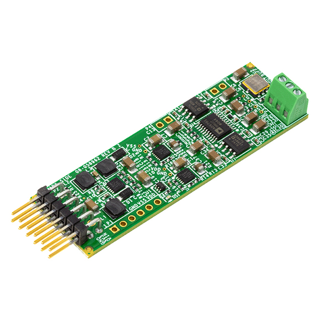
- Pin Jumper (2-pos, 0.100” pitch):
- Purpose: These jumpers are used to connect the DAC boards to the QuACK system, allowing for communication and control.
- Link: Pin Jumper
- Datasheet: Pin Jumper Datasheet 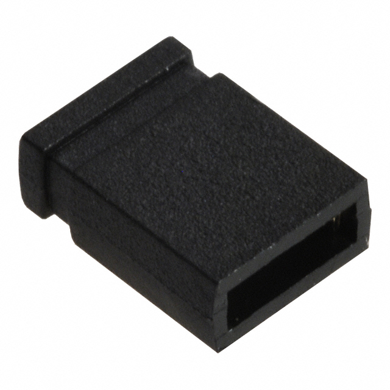
- PCB Standoffs:
- Purpose: These standoffs are used to secure the input board into a stacked configuration within the QuACK system, providing mechanical stability and separation between components.
- Link: PCB Standoffs
- Datasheet: PCB Standoff Datasheet 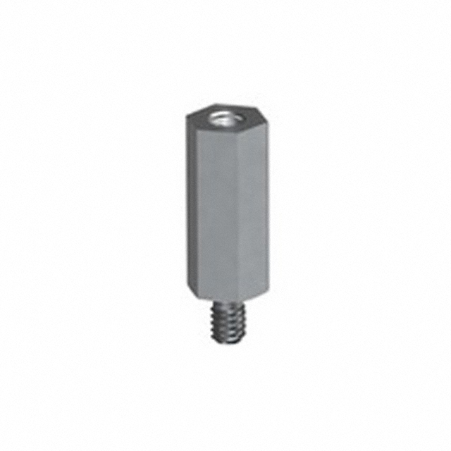
- Steel M3 Nuts:
- Purpose: These nuts are used in conjunction with the PCB standoffs to secure the input/output/coupling board and other components within the QuACK system.
- Link: Steel M3 Nuts
- Datasheet: Steel M3 Nuts Datasheet 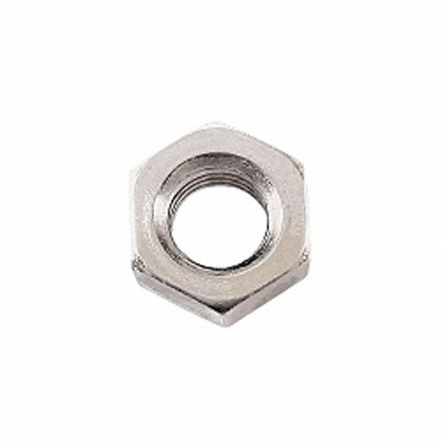
- Short Screw:
- Purpose: These screws are used to secure various components within the QuACK system, including the input and output boards.
- Link: Short Screw
- Datasheet: Short Screw Datasheet 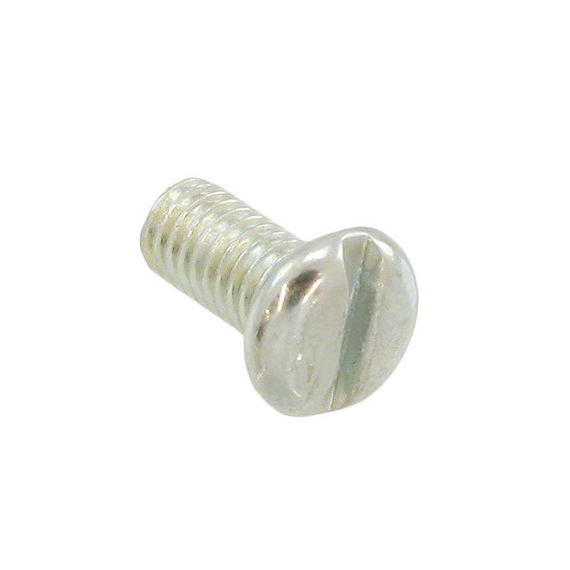
- Long Screw:
- Purpose: These screws are used to secure the input and output boards within the QuACK system, providing stability and mechanical support.
- Link: Long Screw
- Datasheet: Long Screw Datasheet 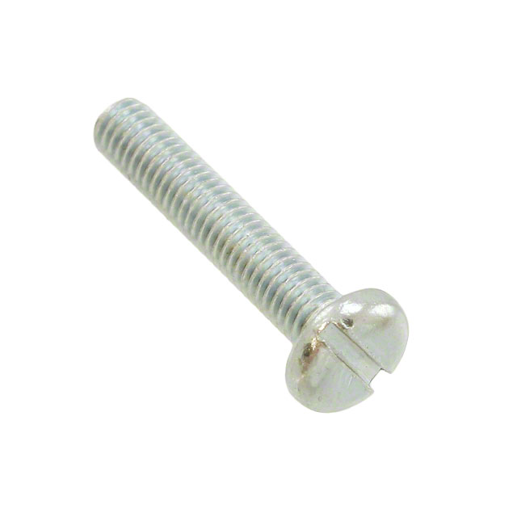
- 5.3mm Nylon M3 Spacer:
- Purpose: These spacers are used to create a gap between the input/output boards.
- Link: 5.3mm Nylon M3 Spacer
- Datasheet: 5.3mm Nylon M3 Spacer Datasheet 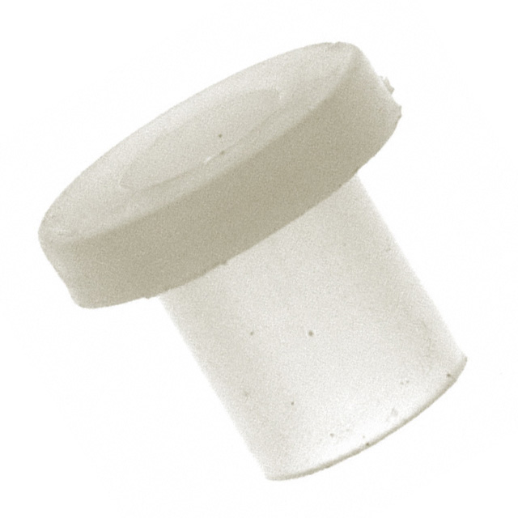
- 3.3mm Nylon M3 Spacer:
- Purpose: These spacers are used to create a gap between the input/output boards.
- Link: 3.3mm Nylon M3 Spacer
- Datasheet: 3.3mm Nylon M3 Spacer Datasheet 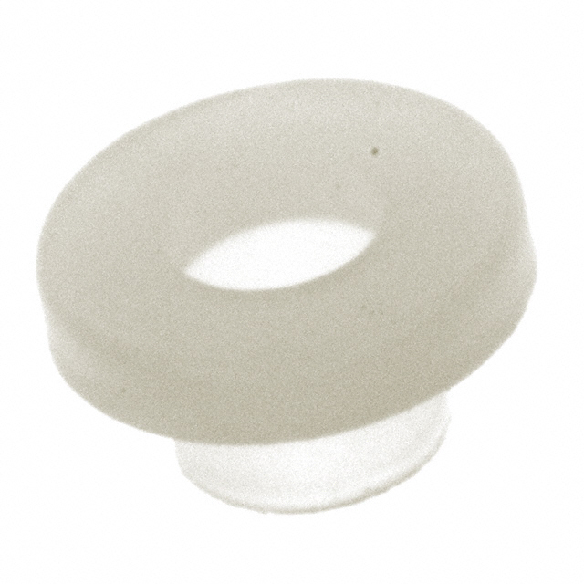
- JST PH 2-Pin Female 4’’ cable:
- Purpose: These cables are used to connect the DAC boards to the QuACK system, allowing for communication and control.
- Link: JST PH 2-Pin Female 4” cable
- Datasheet: JST PH 2-Pin Female 4” cable Datasheet 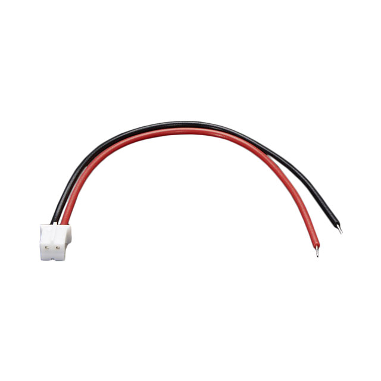
- Microfit Power Cable:
- Purpose: This cable is used to provide power to the QuACK system
- Link: Microfit Power Cable
- Datasheet: Microfit Power Cable Datasheet 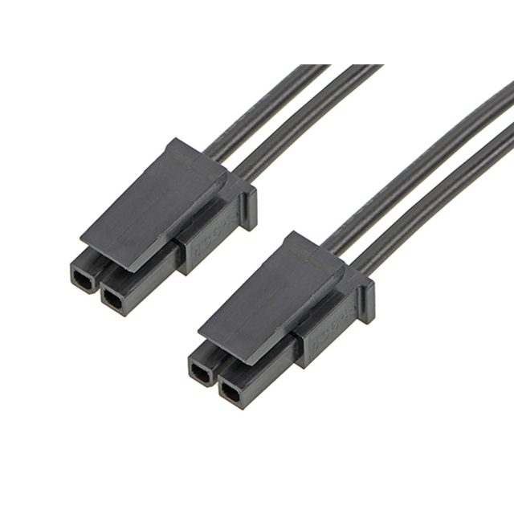
- Ribbon Cable Connector
- Purpose: These connectors are used to connect the ribbon cable to the QuACK system, allowing for communication and control between components.
- Link: Ribbon Cable Connector (2x12 female)
- Datasheet: Ribbon Cable Connector Datasheet 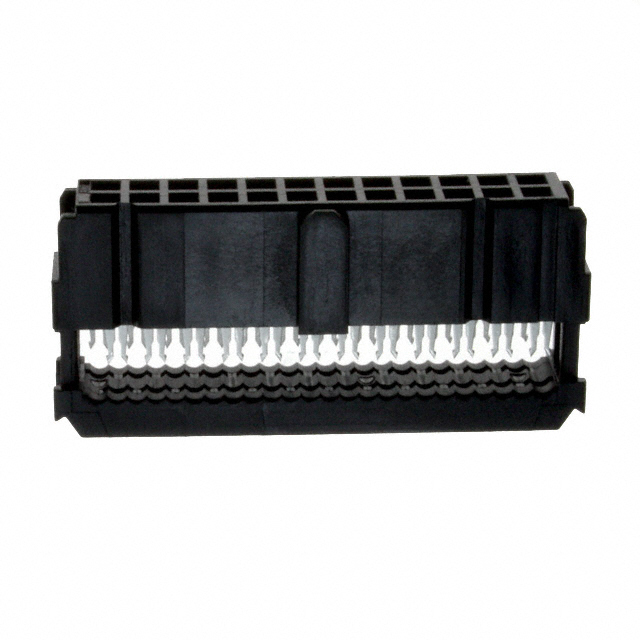
- Ribbon Cable (1.27mm, 28AWG, 24cond):
- Purpose: This ribbon cable is used to connect the QuACK system to various components, allowing for communication and control.
- Link: Ribbon Cable (1.27mm, 28AWG, 24cond)
- Datasheet: Ribbon Cable Datasheet 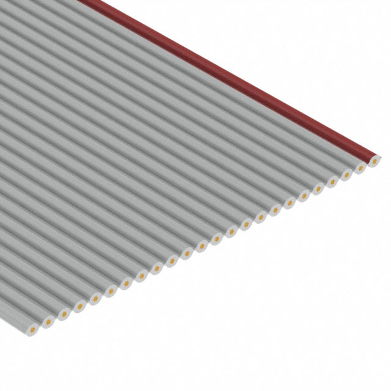
- Male to male 25pin DSUB cable:
- Purpose: This cable is used to connect the QuACK system to the FPGA through the coupling board, allowing for communication and control.
- Link: Female to Female 25pin DSUB cable 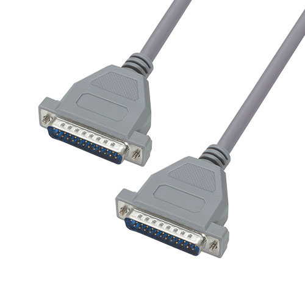